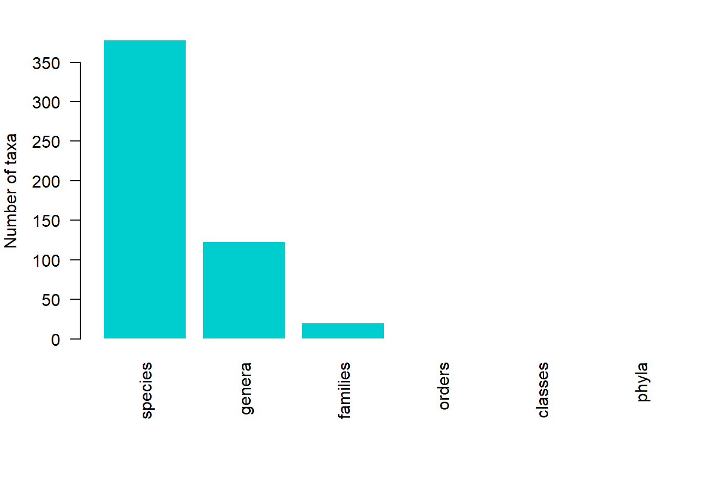
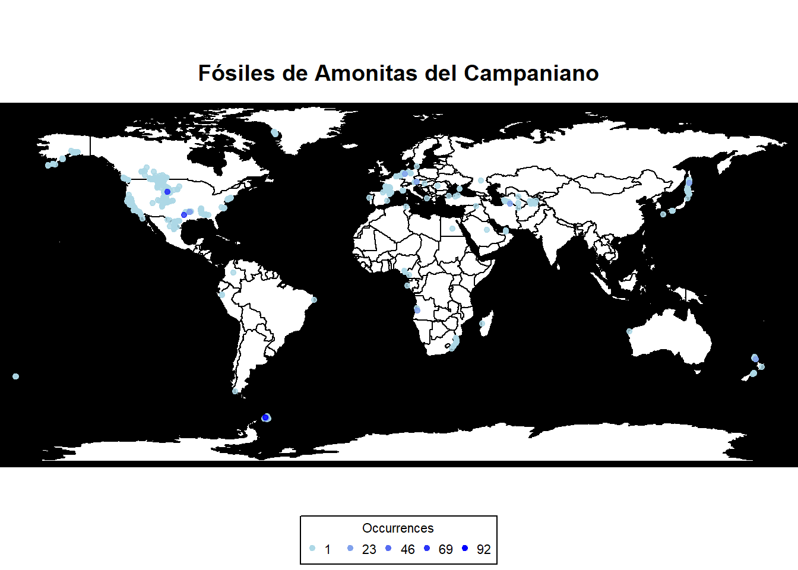
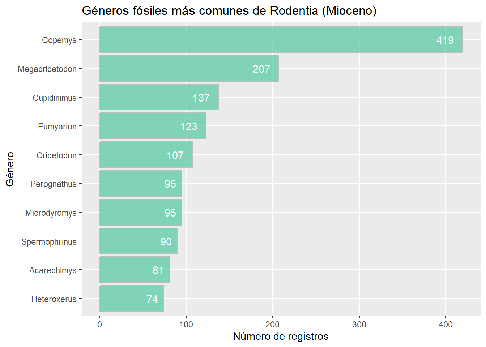

# Vamos a cargar algunos de los paquetes a usar
#install.packages("paleobioDB")
#install.packages("SDAR")
#install.packages("readxl")
library(tidyverse)
library(ggplot2)
library(psych)
library(SDAR)
library(readxl)
library(paleobioDB)Módulo 3: SDAR y PBDB
Columnas estratigráficas con SDAR
¿Qué es SDAR?
SDAR (Stratigraphic Data Analysis in R) es un paquete de R diseñado para facilitar el análisis y la visualización de columnas estratigráficas (SC). Estas columnas se utilizan ampliamente en geología y paleontología para representar:
Tamaño de grano
Grosor de unidades
Componentes litológicos
Contenido fósil
Estructuras sedimentarias
Tradicionalmente estas columnas se dibujan a mano en programas como Illustrator, Inkscape, CorelDRAW o Grpher. SDAR automatiza este proceso de manera reproducible y con código abierto. SDAR permite exportar las columnas realizadas a un formato vectorizado haciendo que sea muy fácil luego editar las columnas y así cambiar sus estética.
SDAR fue creado por John Ortiz y Carlos Jaramillo, la publicación sobre le paquete SDAR al igual que los archivos adjuntos se puede encontrar aquí.
Instalación
SDAR así como sus dependencias se pueden instalar directamende desde CRAN:
install.packages("SDAR")
install.packages("readxl")Flujo de trabajo típico
📥 Importación de datos (plantillas Excel, bases de datos o archivos planos).
✅ Validación del formato y estructura.
📊 Visualización de la columna como archivo PDF.
🎨 Personalización: estructuras sedimentarias, fósiles, bioturbación, etc.
📈 Análisis de datos: estadísticas de litologías, conteo de fósiles, etc.
Para mayor facilidad los creadores de SDAR publicaron archivos de excel con el template para usarse en SDAR y que así no se tenga ningún problema al cargar los datos.
Carga de datos
El paquete SDAR ya tiene un dataset y se puede usar facilmente pero vamos a abrir los archivos .xlsx para entender como se es el proceso habitual.
Se cargan dos archivos una de capas y otro de intervalos
# Para obtener ayuda sobre el formato de los datos
# vignette("SDAR_data_model")
# data(saltarin_beds) carga el dataset de ejmplo
# Tambien se puede cargar con:
# system.file("extdata", "SDAR_v0.95_beds_saltarin.xlsx", package = "SDAR")
# system.file("extdata", "SDAR_v0.95_intervals_saltarin.xlsx", package = "SDAR")
# Leemos el archivo de capas
capas <- read_excel("datos/SDAR_v0.95_beds_saltarin.xlsx")
# Vamos a darle un vistazo a los datos
str(capas)tibble [686 × 22] (S3: tbl_df/tbl/data.frame)
$ bed_number : num [1:686] 1 2 3 4 5 6 7 8 9 10 ...
$ base : num [1:686] 671 670 669 669 668 ...
$ top : num [1:686] 670 669 669 668 667 ...
$ rock_type : chr [1:686] "sedimentary" "sedimentary" "sedimentary" "sedimentary" ...
$ prim_litho : chr [1:686] "claystone" "siltstone" "siltstone" "claystone" ...
$ grain_size : chr [1:686] "clay" "silt" "silt" "clay" ...
$ prim_litho_percent : logi [1:686] NA NA NA NA NA NA ...
$ sec_litho : chr [1:686] "coal" "coal" "sandstone" NA ...
$ grain_size_sec_litho: logi [1:686] NA NA NA NA NA NA ...
$ sec_litho_percent : logi [1:686] NA NA NA NA NA NA ...
$ base_contact : chr [1:686] "sharp" "sharp" "sharp" "sharp" ...
$ grading : chr [1:686] NA "inverse" NA "normal" ...
$ grain_size_base : chr [1:686] NA "clay" NA "clay / silt" ...
$ grain_size_top : chr [1:686] NA "silt" NA "clay" ...
$ sorting : logi [1:686] NA NA NA NA NA NA ...
$ roundness : logi [1:686] NA NA NA NA NA NA ...
$ matrix : logi [1:686] NA NA NA NA NA NA ...
$ cement : logi [1:686] NA NA NA NA NA NA ...
$ fabric : logi [1:686] NA NA NA NA NA NA ...
$ munsell_color : chr [1:686] "N3" "5GY 8/1" "N5" "N3" ...
$ Rcolor : logi [1:686] NA NA NA NA NA NA ...
$ notes : chr [1:686] "Plant remains randomly distributed at the top" "Coarsening upward succession with laminated silstone at the base grading to massive sandy mudstones at the top,"| __truncated__ "< 15% medium quartz sand grain, subangular randomized." "Irregular bioturbation.Filled of clear gray sandy siltstone" ...nrow(capas)[1] 686names(capas) [1] "bed_number" "base" "top"
[4] "rock_type" "prim_litho" "grain_size"
[7] "prim_litho_percent" "sec_litho" "grain_size_sec_litho"
[10] "sec_litho_percent" "base_contact" "grading"
[13] "grain_size_base" "grain_size_top" "sorting"
[16] "roundness" "matrix" "cement"
[19] "fabric" "munsell_color" "Rcolor"
[22] "notes" # Al usar SDAR los datos de capas tiene que validarse pasandolos a la clase strata
# datum indica si el sentido de las capas, base en afloramiento
capas_val <- strata(capas, datum ="top") # top ya que es un core 'beds data has been validated successfully'Veamos un resumen de las capas validadas
# El argumento grain.size permite imprimir el resumen de
# la litología por tamaño de grano
summary(capas_val, grain.size=TRUE)
Number of beds: 610
Number of covered intervals 76
Thickness of the section: 671.0
Thickness of covered intervals: 77.9
Summary by lithology:
Thickness Percent (%) Number beds
sandstone 233.3 34.77 330
claystone 211.6 31.53 130
siltstone 143.4 21.37 138
coal 3.1 0.46 8
conglomerate 1.8 0.27 4
covered 77.9 11.61 76
Summary by Grain Size:
Thickness Percent (%) Number beds
clay 194.0 28.92 123
clay / silt 43.7 6.51 28
silt 88.6 13.21 89
silt / very fine sand 88.3 13.16 101
very fine sand 71.6 10.68 122
very fine / fine sand 32.4 4.83 49
fine sand 27.5 4.10 37
fine / medium sand 20.3 3.03 18
medium sand 9.2 1.37 11
medium / coarse sand 5.6 0.83 8
coarse sand 5.5 0.82 15
coarse / very coarse sand 3.7 0.55 3
very coarse / granule 1.5 0.22 3
granule 1.1 0.16 3
covered 77.9 11.61 76Graficar capas y añadir datos de intervalos
SDAR no grafica como otros paquetes ya que su salida es siempre un archivo pdf vectorizado.
En cuanto a los intervalos SDAR tiene varias opciones y se deben cargar y seleccionar manualmente cuales se incluyen en la grafica, estos datos pueden ser:
| Nombre en SDAR (argumento) | Significado |
|---|---|
| ncore | número de testigo (núcleo de perforación) |
| samples | muestras |
| visual_oil_stain | mancha de petróleo visible |
| bioturbation | bioturbación (actividad biológica en sedimentos) |
| sed.structures | estructuras sedimentarias |
| fossils | fósiles |
| other.sym | otros símbolos |
| lithostrat | litostratigrafía (unidades según litología) |
| chronostrat | cronostratigrafía (unidades según edad geológica) |
# La función plot() genera un archivo pdf, al no tener más valores
# se crea el archivo con los valores por defecto
#plot(capas_val)
# subset.base y subset.top permiten elegir que parte se desea graficar
# Vamos a cargar todos los datos de los intervalos
# Cargamos el archivo de intervalos
intervalos <- "datos/SDAR_v0.95_intervals_saltarin.xlsx"
# Al leer el archivo de intervalos solo se carga la primera hoja
str(read_excel(intervalos))tibble [11 × 2] (S3: tbl_df/tbl/data.frame)
$ item: chr [1:11] "locality_name" "locality_id" "locality_type" "thickness_unit" ...
$ name: chr [1:11] "SALTARIN 1A" "574" "borehole core" "meters" ...# Vamos a cargar todos los valores de intervalos
core_number_dat <- read_excel(intervalos, sheet = "core_number") #número de testigo
samples_dat <- read_excel(intervalos, sheet = "samples") #muestras
sed_structures_dat <- read_excel(intervalos, sheet = "sed_structures") #estructuras sedimentarias
biot_dat <- read_excel(intervalos, sheet = "bioturbation") #bioturbación
fossils_dat <- read_excel(intervalos, sheet = "fossils") #Fósiles
other_symbols_dat <- read_excel(intervalos, sheet = "other_symbols") #otros símbolos
lito_dat <- read_excel(intervalos, sheet = "lithostra") #litostratigrafía
crono_dat <- read_excel(intervalos, sheet = "chronostra") #cronostratigrafía
meta_dat <- read_excel(intervalos, sheet = "metadata") #metadatos
meta_dat# A tibble: 11 × 2
item name
<chr> <chr>
1 locality_name SALTARIN 1A
2 locality_id 574
3 locality_type borehole core
4 thickness_unit meters
5 ref_datum top down (wells)
6 latitude 4.6120000000000001
7 longitude -70.495000000000005
8 elevation 139
9 country Colombia
10 author Lithological description: Bayona, et al. 2008 - Sedimentologi…
11 reference Bayona, G., Valencia, A., Mora, A., Rueda, M., Ortiz, Johan.,…Componer y exportar la columna final
Para componer el resultado final se usa la función plot() la cual lleva una gran cantidad de argumentos entre los cuales se encuentran:
subset.basepermite elegir el límite inferior a graficar.subset.toppermite elegir el límite superior a graficar.plot_orderdeclara el orden para graficar los diferentes datos.scaledeclara la escala de la columna.symbols.sizedeclara el tamaño de los símbolos al graficar la columna.
v_order <- c( "chronostrat","lithostrat","samples","bed.number","barscale","ncore","lithology","fossils","sed.structures","bioturbation","other.sym")
plot(capas_val, data.units="meters",
file.name = "prueba_SDAR",
subset.base=600, subset.top=550,
bioturbation=biot_dat,
fossils=fossils_dat,
sed.structures=sed_structures_dat,
other.sym=other_symbols_dat,
samples=samples_dat,
ncore=core_number_dat,
lithostrat=lito_dat,
chronostrat=crono_dat,
symbols.size=0.8,
plot.order = v_order,
scale = 100)
Ejercicio
Crea tu propia columna cmabiando el orden de los datos, la escala, la cantidad de datos y el rango.
Paleobiology Database
La Paleobiology Database (PBDB) es la base de datos más grande del mundo de datos paleontológicos.
El paquete paleobioDB permite acceder de forma sencilla, reproducible y flexible a los datos paleontológicos disponibles en la Paleobiology Database (PBDB). Está diseñado tanto para realizar consultas directas como para visualizar datos en sus dimensiones espaciales, temporales y taxonómicas.
Uso básico
El paquete está organizado en dos grupos de funciones:
Funciones base: conectan directamente con la API de PBDB (por ejemplo
pbdb_occurrences()).Funciones de análisis: facilitan la exploración de datos en aspectos taxonómicos, geográficos y temporales.
Descargando información del API
El paquete posee varias funciones para
El paquete paleobioDB permite hacer consultas flexibles a la Paleobiology Database (PBDB), enfocadas en:
Ocurrencias fósiles
Información taxonómica
Estratigrafía
Referencias bibliográficas, entre otros
Estas funciones permiten descargar datos paleontológicos estructurados directamente a R para su análisis.
Funciones principales y su utilidad
| Función | ¿Qué hace? | Ejemplo |
|---|---|---|
pbdb_taxon() |
Muestra información detallada de un taxón (autor, año, aparición, tamaño) | pbdb_taxon (name = "chelus" ,vocab = "pbdb", show = c("attr","app", "size")) |
pbdb_ref_taxa() |
Devuelve referencias asociadas a un taxón | pbdb_ref_taxa (name = "felidae") |
pbdb_collections() |
Muestra información de las colecciones que contienen el item buscado | pbdb_collections(limit=100, base_name="cetacea") |
pbdb_intervals() |
Devuelve información sobre todos los intervalos de tiempo en el rango seleccionado | pbdb_intervals(min_ma = 0,max_ma = 2) |
pbdb_occurrences() |
Descarga registros fósiles en forma de dataframe (ubicación, edad, taxón, etc.) |
pbdb_occurrences (limit="all", base_name ="porifera", show = "coords") |
Hay un total de 19 funciones para consultar y descargar datos, todas las funciones tienen la misma estructura.
las funciones de ayuda en R (?pbdb_occurrences) ofrecen ejemplos y los parámetros más comunes.
- También puedes consultar la documentación completa de la API en:
👉 http://paleobiodb.org/data1.2/
Consulta de ocurrencias de un grupo
Vamos a consultar las ocurrencias de un grupo y todos los taxones hijos de este durante un periodo temporal, algunos taxones que podemos buscar:
Rodentia (Orden de los roedores).
Cryptodira ( Suborden de tortugas, donde se encuentra la mayoría de las tortugas marinas y terrestres).
Felidae (Familia de los felinos).
Rotaliida (Orden de foraminíferos)
Radiolaria (Phylum de los radiolarios).
Bivalvia (Clase de moluscos con dos valvas ).
Ammonitida (Orden de moluscos donde están las amonitas).
# Descargar todos los registros de datos_taxa del intervalo Cuaternario
datos_taxa <- pbdb_occurrences(
#base_name devuleve todos los taxones "hijos", taxon_name solo devulve el taxon específico
base_name = "Ammonitida", # Grupo taxonómico
interval = "Campanian", # Intervalo geológico
vocab = "pbdb", # Vocabulario estándar PBDB
limit = "all", # Traer todos los registros
show = c("coords", "classext", "ident") # Incluir coordenadas, clasificación extendida, etc.
)
#
str(datos_taxa)'data.frame': 2719 obs. of 35 variables:
$ occurrence_no : chr "23296" "23297" "23303" "23304" ...
$ record_type : chr "occ" "occ" "occ" "occ" ...
$ collection_no : chr "1510" "1510" "1511" "1511" ...
$ identified_name: chr "Pachydiscus cf. binodatus" "Pachydiscus cf. japonicus" "Baculites sp." "Pachydiscus cf. japonicus" ...
$ identified_rank: chr "species" "species" "genus" "species" ...
$ identified_no : chr "486851" "15309" "14603" "15309" ...
$ accepted_name : chr "Pachydiscus binodatus" "Pachydiscus" "Baculites" "Pachydiscus" ...
$ accepted_rank : chr "species" "genus" "genus" "genus" ...
$ accepted_no : chr "486851" "15309" "14603" "15309" ...
$ early_interval : chr "Late Campanian" "Late Campanian" "Late Campanian" "Late Campanian" ...
$ max_ma : num 83.6 83.6 83.6 83.6 83.6 83.6 83.6 83.6 83.6 83.6 ...
$ min_ma : num 72.2 72.2 72.2 72.2 72.2 72.2 72.2 72.2 72.2 72.2 ...
$ reference_no : chr "44" "44" "44" "44" ...
$ lng : num -120 -120 -120 -120 -120 ...
$ lat : num 34.5 34.5 34.5 34.5 34.5 ...
$ phylum : chr "Mollusca" "Mollusca" "Mollusca" "Mollusca" ...
$ phylum_no : chr "7805" "7805" "7805" "7805" ...
$ class : chr "Cephalopoda" "Cephalopoda" "Cephalopoda" "Cephalopoda" ...
$ class_no : chr "12315" "12315" "12315" "12315" ...
$ order : chr "Ammonitida" "Ammonitida" "Ammonitida" "Ammonitida" ...
$ order_no : chr "84931" "84931" "84931" "84931" ...
$ family : chr "Pachydiscidae" "Pachydiscidae" "Baculitidae" "Pachydiscidae" ...
$ family_no : chr "82577" "82577" "59287" "82577" ...
$ genus : chr "Pachydiscus" "Pachydiscus" "Baculites" "Pachydiscus" ...
$ genus_no : chr "15309" "15309" "14603" "15309" ...
$ primary_name : chr "Pachydiscus" "Pachydiscus" "Baculites" "Pachydiscus" ...
$ species_name : chr "binodatus" "japonicus" "sp." "japonicus" ...
$ species_reso : chr "cf." "cf." NA "cf." ...
$ difference : chr NA "species not entered" NA "species not entered" ...
$ late_interval : chr NA NA NA NA ...
$ reid_no : chr NA NA NA NA ...
$ subgenus_no : chr NA NA NA NA ...
$ primary_reso : chr NA NA NA NA ...
$ subgenus_name : chr NA NA NA NA ...
$ subgenus_reso : chr NA NA NA NA ...print(unique(datos_taxa$family)) [1] "Pachydiscidae" "Baculitidae" "Scaphitidae"
[4] "Diplomoceratidae" "Placenticeratidae" "Nostoceratidae"
[7] "Kossmaticeratidae" "Muniericeratidae" "Collignoniceratidae"
[10] "Tetragonitidae" "Desmoceratidae" "Sphenodiscidae"
[13] "Ancyloceratidae" "Heteroceratidae" "Ptychoceratidae"
[16] "Vascoceratidae" NA "Pseudotissotidae"
[19] "Lytoceratidae" "Hamitidae" "Acanthoceratidae" Analizar y graficar información
El paquete posee funciones permiten visualizar y analizar los datos obtenidos desde la Paleobiology Database, explorando su dimensión temporal, taxonómica y espacial. Estas funciones aceptan un objeto dataframe, en este caso datos_taxa.
| Función | ¿Qué hace? | Ejemplo |
|---|---|---|
pbdb_map() |
Muestra un mapa con las ocurrencias fósiles. | pbdb_map(datos_taxa, main = "Ocurrencias", pch = 19, cex = 0.7) |
pbdb_map_occur() |
Muestra el esfuerzo de muestreo (número de registros por celda geográfica). | pbdb_map_occur(datos_taxa, res = 5) |
pbdb_map_richness() |
Muestra la riqueza (diversidad) de especies/géneros por localidad. | pbdb_map_richness(datos_taxa, rank = "species") |
pbdb_richness() |
Grafica la riqueza (número de especies, géneros, etc.) a lo largo del tiempo. | pbdb_richness(datos_taxa, rank = "species", temporal_extent = c(0, 10), res = 1) |
pbdb_orig_ext() |
Muestra las tasas de origen y extinción en el tiempo. | pbdb_orig_ext(datos_taxa, rank = "genus", temporal_extent = c(0, 10), res = 1, orig_ext = 1) |
pbdb_temp_range() |
Grafica el rango temporal (aparición-extinción) de los taxones en el conjunto de datos. | pbdb_temp_range(datos_taxa, rank = "species", names = FALSE) |
pbdb_subtaxa() |
Lista y grafica la cantidad de subgrupos taxonómicos (especies, géneros, familias, etc.). | pbdb_subtaxa(datos_taxa) |
pbdb_temporal_resolution() |
Mide y grafica la resolución temporal de los registros fósiles (en millones de años). | pbdb_temporal_resolution(datos_taxa) |
# Ver resolución temporal de los registros
pbdb_subtaxa(datos_taxa, col = "cyan3")
species genera families orders classes phyla
1 378 123 20 1 1 1# Visualizar el rango temporal de géneros
#pbdb_temp_range(datos_taxa, rank = "genus", col = "cyan3", names = FALSE)Otras de las funciones útiles para explorar los datos son las siguientes:
# Riqueza de especies a lo largo del tiempo
pbdb_richness(datos_taxa, rank = "species", res = 2, temporal_extent = c(65, 95))
# Tasa de origen (especiación)
pbdb_orig_ext(datos_taxa, rank = "species", temporal_extent = c(65, 95), res = 1, orig_ext = 1)
# Tasa de extinción
pbdb_orig_ext(datos_taxa, rank = "species", temporal_extent = c(65, 95), res = 1, orig_ext = 2)Hagamos un mapa con las ocurrencias de fósiles de Amonitas durante el Campaniano usando las funciones del paquete
# Mapa de ocurrencias fósiles
pbdb_map(datos_taxa, main = "Fósiles de Amonitas del Campaniano", pch = 19, cex = 0.7)
# Mapa del esfuerzo de muestreo
# pbdb_map_occur(datos_taxa, res = 5)
# Mapa de riqueza de especies
# pbdb_map_richness(datos_taxa, rank = "species", res = 5)Las funciones de análisis y exploración del paquete son buenas pero muy limitadas y las gráficas que produce son de baja calidad y muy poco flexibles, por lo mismo la mayor útilidad del paquete reside en importar datos.
Ejercicio
Importa los datos de alguno de los taxones propuestos para el Mioceno (en el caso de Ammonitida seleccionar un piso del Cretácico), usando las funciones de Tidyverse organiza rapidamente los datos y crea un diagrama de barras con ggplot para los géneros.
Usa la función
as_tibble()para convertir el dataframe generado en un Tibble y operarlo más facilmente.¿Cuántos géneros o especies hay?
Filtra los valores NA para el género y selecciona las 10 más comunes.
Code
# 1. Descargar datos del grupo elegido (por ejemplo: Rodentia)
rodentia <- pbdb_occurrences(
base_name = "Rodentia",
interval = "Miocene",
limit = "all",
vocab = "pbdb",
show = c("coords", "classext", "ident") # Para obtener info taxonómica como genus
)
# 2. Convertir a tibble y explorar
rodentia_tbl <- as_tibble(rodentia)
glimpse(rodentia_tbl)Rows: 7,367
Columns: 36
$ occurrence_no <chr> "138785", "138786", "138787", "138788", "138789", "138…
$ record_type <chr> "occ", "occ", "occ", "occ", "occ", "occ", "occ", "occ"…
$ collection_no <chr> "11798", "11798", "11798", "11798", "11798", "11798", …
$ identified_name <chr> "cf. Callosciurus sp.", "cf. Tamiops sp.", "cf. Dremom…
$ identified_rank <chr> "genus", "genus", "genus", "genus", "genus", "genus", …
$ identified_no <chr> "92520", "92512", "92513", "41487", "41524", "41498", …
$ accepted_name <chr> "Callosciurus", "Tamiops", "Dremomys", "Albanensia", "…
$ accepted_rank <chr> "genus", "genus", "genus", "genus", "genus", "genus", …
$ accepted_no <chr> "92520", "92512", "92513", "41487", "41524", "41498", …
$ early_interval <chr> "Tortonian", "Tortonian", "Tortonian", "Tortonian", "T…
$ max_ma <dbl> 11.63, 11.63, 11.63, 11.63, 11.63, 11.63, 11.63, 11.63…
$ min_ma <dbl> 7.246, 7.246, 7.246, 7.246, 7.246, 7.246, 7.246, 7.246…
$ reference_no <chr> "11436", "11436", "11436", "11436", "11436", "11436", …
$ lng <dbl> 102.06667, 102.06667, 102.06667, 102.06667, 102.06667,…
$ lat <dbl> 25.01667, 25.01667, 25.01667, 25.01667, 25.01667, 25.0…
$ phylum <chr> "Chordata", "Chordata", "Chordata", "Chordata", "Chord…
$ phylum_no <chr> "33815", "33815", "33815", "33815", "33815", "33815", …
$ class <chr> "Mammalia", "Mammalia", "Mammalia", "Mammalia", "Mamma…
$ class_no <chr> "36651", "36651", "36651", "36651", "36651", "36651", …
$ order <chr> "Rodentia", "Rodentia", "Rodentia", "Rodentia", "Roden…
$ order_no <chr> "41370", "41370", "41370", "41370", "41370", "41370", …
$ family <chr> "Sciuridae", "Sciuridae", "Sciuridae", "Sciuridae", "S…
$ family_no <chr> "41486", "41486", "41486", "41486", "41486", "41486", …
$ genus <chr> "Callosciurus", "Tamiops", "Dremomys", "Albanensia", "…
$ genus_no <chr> "92520", "92512", "92513", "41487", "41524", "41498", …
$ primary_name <chr> "Callosciurus", "Tamiops", "Dremomys", "Albanensia", "…
$ primary_reso <chr> "cf.", "cf.", "cf.", NA, NA, "?", "cf.", "cf.", NA, NA…
$ species_name <chr> "sp.", "sp.", "sp.", "sp.", "sp.", "sp.", "sp.", "sp."…
$ difference <chr> NA, NA, NA, NA, NA, NA, NA, NA, NA, NA, NA, "species n…
$ species_reso <chr> NA, NA, NA, NA, NA, NA, NA, NA, NA, NA, NA, NA, NA, NA…
$ late_interval <chr> NA, NA, NA, NA, NA, NA, NA, NA, NA, NA, NA, NA, NA, NA…
$ reid_no <chr> NA, NA, NA, NA, NA, NA, NA, NA, NA, NA, NA, NA, NA, NA…
$ flags <chr> NA, NA, NA, NA, NA, NA, NA, NA, NA, NA, NA, NA, NA, NA…
$ subgenus_no <chr> NA, NA, NA, NA, NA, NA, NA, NA, NA, NA, NA, NA, NA, NA…
$ subgenus_name <chr> NA, NA, NA, NA, NA, NA, NA, NA, NA, NA, NA, NA, NA, NA…
$ subgenus_reso <chr> NA, NA, NA, NA, NA, NA, NA, NA, NA, NA, NA, NA, NA, NA…Code
# print(unique(rodentia_tbl$genus))
# 3. Contar géneros, filtrar los NA, ordenar y seleccionar los 10 más comunes
top_generos <- rodentia_tbl %>%
filter(!is.na(genus)) %>%
count(genus, sort = TRUE) %>%
slice_max(n, n = 10)
# 4. Crear diagrama de barras con ggplot2
ggplot(top_generos, aes(x = reorder(genus, n), y = n)) +
# Seleccionar diagrama de barras y añadir el conteo
geom_col(fill = "aquamarine3",colour = "gray",alpha = 0.8) +
geom_text(aes(label = n), hjust = 1.5, colour = "white")+
labs(
title = "Géneros fósiles más comunes de Rodentia (Mioceno)",
x = "Género",
y = "Número de registros"
) +
coord_flip() +
theme_gray()